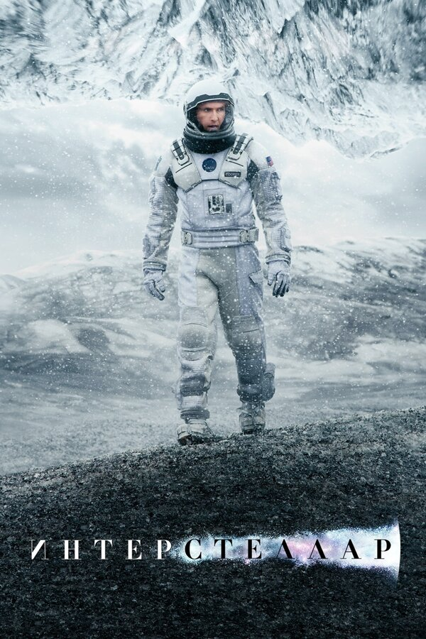
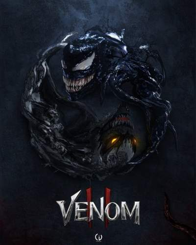
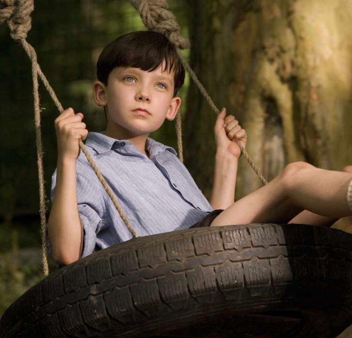

Кинематограф занимает важное место в современной жизни. Сегодня кино достигло пика своей популярности и имеет большую образовательную и эстетическую силу.
Каждый день непрерывно идут съемки.
.png)
.png)
Кинематограф занимает важное место в современной жизни. Сегодня кино достигло пика своей популярности и имеет большую образовательную и эстетическую силу.
Каждый день непрерывно идут съемки.
Кино одно из самых молодых искусств нашего времени. Оно возникло в конце XIX века, чему мы обязаны известным на весь мир братьям Люмьер. Они были первыми в истории, кому удалось снять фильм. Их знаменитый короткометражный фильм «Прибытие поезда» стал сенсацией в то время. Именно с этого события начинает вести отсчет прогресс в кинематографе.
.png)
Изначально фильмы были черно-белые и немые. Звездой немого кино стал Чарли Чаплин, имя которого известно каждому и поныне. Затем кино приобрело звук, поэтому стали популярны мюзиклы. Спустя время кинокартины стали снимать в цвете. Уже в начале XX века люди семьями спешили в кинотеатр на новый, это случалось нечасто, поэтому поход в кино был настоящим праздником. К середине столетия, когда появились телевизоры, кино вошло в каждый дом. На экранах телевизоров стали появляться давно знакомые картины. Но процесс съемок не останавливался, каждая страна снимала свои фильмы. При написании сценария часто использовали книги и пьесы. До сих пор экранизация книг востребованы в обществе. Самые интересные фильмы переводились на разные языки. Были учреждены кинофестивали и премии, например, «Оскар», «Пальмовая ветвь» и др. С каждым годом кино набирала все большую популярность, ведь намного проще потратить полтора часа и увидеть все своими глазами, чем долгими вечерами читать книги.
.png)
С появлением цифровых технологий кино усовершенствовалось еще больше. Режиссеры начали использовать компьютерную графику и различные спецэффекты. Технология 3D перевернула представление о кино, фантазия стала похожа на реальность. В современном мире кино обладает большой силой, влияет на сознание человека и его мировоззрение. Кино использую для обучающих целей, к примеру, документальные и исторические фильмы несут в себе полезную информацию о мире, передают накопившиеся знания доступным языком.
.png)
Я люблю смотреть кино, мой любимый жанр кино – фантастика. Сегодня фантастические фильмы на экране выглядят как реальность, ты словно попадаешь в сказочный мир, ты – часть него. Каждый фильм несет в себе определенную мораль, я выношу урок из каждого фильма. Я слежу за новостями кино, и за работой актеров. Мне нравится часто сравнивать книгу и фильм. Это очень увлекательно замечать отхождение от текста книги, расхождение взглядов автора и сценариста. Сегодня фильмы выходят, не будет преувеличением сказать, каждый день. Кинематограф пестрит разнообразием. От качественного кино с хорошим сценарием до самого непонятного и пустого фильмеца. Выбор на любой вкус!
.png)
| Фильм | Описание | Актёры | Кадр с фильма |
| Джокер | Готэм, начало 1980-х годов. Комик Артур Флек живет с больной матерью, которая с детства учит его «ходить с улыбкой». Пытаясь нести в мир хорошее и дарить людям радость, Артур сталкивается с человеческой жестокостью и постепенно приходит к выводу, что этот мир получит от него не добрую улыбку, а ухмылку злодея Джокера. | Хоакин Феникс, Роберт Де Ниро, Зази Битц, Фрэнсис Конрой, Бретт Каллен, Шей Уигэм, Билл Кэмп, Гленн Флешлер, Ли Гилл, Джош Пэйс | |
| Интерстеллар | Наше время на Земле подошло к концу, команда исследователей берет на себя самую важную миссию в истории человечества; путешествуя за пределами нашей галактики, чтобы узнать есть ли у человечества будущее среди звезд. | Мэттью МакКонахи, Энн Хэтэуэй, Джессика Честейн, Элиес Габел, Уэс Бентли, Майкл Кейн, Тофер Грейс, Кейси Аффлек, Маккензи Фой, Джефф Хефнер и другие. |  |
| Веном | Более чем через год после тех событий журналист Эдди Брок пытается приспособиться к жизни в качестве хозяина инопланетного симбиота Венома, который наделяет его сверхчеловеческими способностями. Брок пытается возродить свою карьеру и берет интервью у серийного убийцы Клетуса Касади, который по воле случая становится хозяином Карнажа и сбегает из тюрьмы после неудавшейся казни. | Том Харди, Мишель Уильямс, Риз Ахмед, Скотт Хэйз, Рейд Скотт, Дженни Слейт, Мелора Уолтерс, Вуди Харрельсон, Пегги Лу, Малкольм С. Мюррэй |  |
| Отряд самоубийц | Правительство решает дать команде суперзлодеев шанс на искупление. Подвох в том, что их отправляют на миссию, где они, вероятнее всего, погибнут. | Марго Робби, Уилл Смит, Джаред Лето, Джай Кортни, Кара Делевинь | |
| Мальчик в полосатой пижаме | История, происходящая во время Второй мировой войны и показанная сквозь глаза невинного и ничего не подозревающего о происходящих событиях Бруно, восьмилетнего сына коменданта концентрационного лагеря. Его случайное знакомство и дружба с еврейским мальчиком по другую сторону ограды лагеря, в конечном счете, приводит к самым непредсказуемым и ошеломительным последствиям. | Эйса Баттерфилд, Джек Скэнлон, Дэвид Тьюлис, Вера Фармига, Эмбер Битти, Шила Хэнкок, Ричард Джонсон, Кара Хорган, Дэвид Хейман, Руперт Френд |  |
| Ячейка 1.1 | Ячейка 1.2 | ||
| Ячейка 2.1 | Ячейка 2.2 | Ячейка 2.3 | Ячейка 2.4 |
| Ячейка 3.1 | Ячейка 3.2 | Ячейка 3.3 | Ячейка 3.4 |
| Ячейка 4 | |||
| Ячейка 5.1 | Ячейка 5.2 | Ячейка 5.3 | Ячейка 5.4 |
| Ячейка 6.1 | Ячейка 6.2 | Ячейка 6.3 | |